Actions on Googleは、スマートスピーカー、携帯電話、車、テレビ、ヘッドフォンなど、5億以上のデバイスにわたって、Googleの仮想パーソナルアシスタントであるGoogleアシスタントの機能を拡張するためのソフトウェアを作成できる、開発者向けプラットフォームです。
ユーザーは、食料品の購入や乗車予約など、何かを達成するためにGoogleアシスタントを会話に加えることができます（現在の機能の完全なリストについては、アクションディレクトリをご覧ください）。開発者は、Actions on Googleを使用して、ユーザーとサードパーティのフルフィルメントサービスとの間の楽しく効果的な会話体験を簡単に作成し活用することができます。
このコードラボは、マルチモジュールのチュートリアルの一部です。各モジュールは、単独で学習することができますし、または他のモジュールと共に順々に学習することもできます。それぞれのモジュールでは、与えられたソフトウェア要件からアクションを構築する方法と、コードをテストする方法に関する、エンドツーエンドの指示を提供します。また、ユーザーに高品質の会話体験を提供するアクションを実装するために必要な概念とベストプラクティスについても説明します。
このコードラボでは、Actions on Googleを使って開発するための初心者レベルの概念について説明します。このコードラボを実施するために、プラットフォームに関する何らかの経験は必要ありません。
何をつくりますか？
このコードラボでは、次の機能を備えた簡単な対話アクションを作成します。
- ユーザーは、明示的にアクションを名前で呼び出すことによって会話を開始することができ、挨拶メッセージで応答します。
- 会話に入ると、ユーザーは好きな色を提供するよう求められます。あなたのアクションは、ユーザーの入力を解析して、必要な情報（つまり、色のパラメータ）を抽出します。
- 色が提供されている場合、あなたのアクションは色のパラメータを処理して、「ラッキーナンバー」を自動生成し、ユーザーに返信して、会話が終了します。
- 色が提供されていない場合、あなたのアクションはパラメータが抽出されるまで、ユーザーに追加のプロンプトを送信します。
- ユーザーは、いつでも明示的に会話から離れることができます。
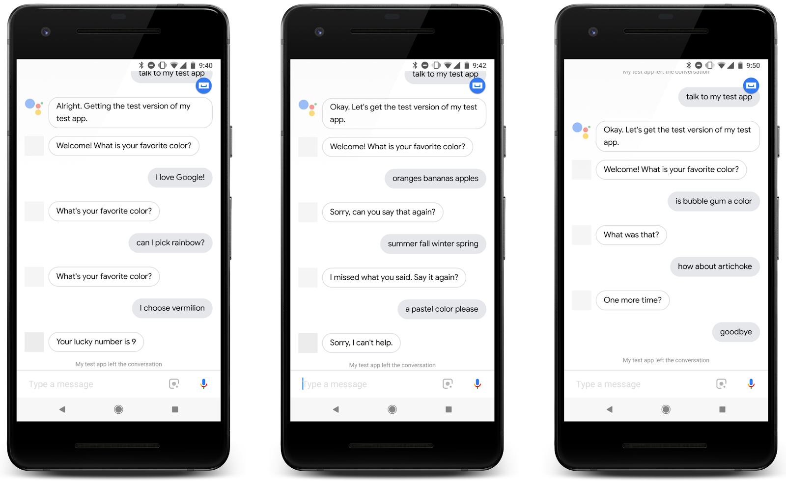
What you'll learn
- アクションがどのよう機能するかを理解します。
- Actions Consoleでのプロジェクトの作成方法。
- Dialogflowエージェントの作成方法。
- Dialogflowでのトレーニングフレーズの定義方法。
- Actions Console Simulatorでのあなたのアクションのテスト方法。
- DialogflowのSlot-fillingやシステムエンティティの使用方法。
- Actions on GoogleクライアントライブラリやDialogflowインラインエディタを使ったアクションのフルフィルメントの実装方法。
必要なもの
以下のツールがあなたの環境に必要となります。
- Chromeのような、ウェブブラウザ。
任意: サンプルコード
任意ですが、私たちのGitHubリポジトリから、このコードラボの全てのプロジェクトコードを得ることができます。
さて、アクションはどのように機能するのでしょうか？
会話を始めるために、ユーザはアシスタントを通じて、あなたのアクションを呼び出すことが必要です。ユーザは、"Hey Google, talk to Google IO 18" のようなフレーズを言う、またはタイプします。これにより、アシスタントに会話するアクションの名前が伝わります。
この時点以降、ユーザはあなたのアクションに話しかけていて、アクションはユーザから入力を得ています。この会話は、ユーザの意図が満たされる、あるいは会話が終了するまで、双方向の対話（ダイアログ）として続きます。
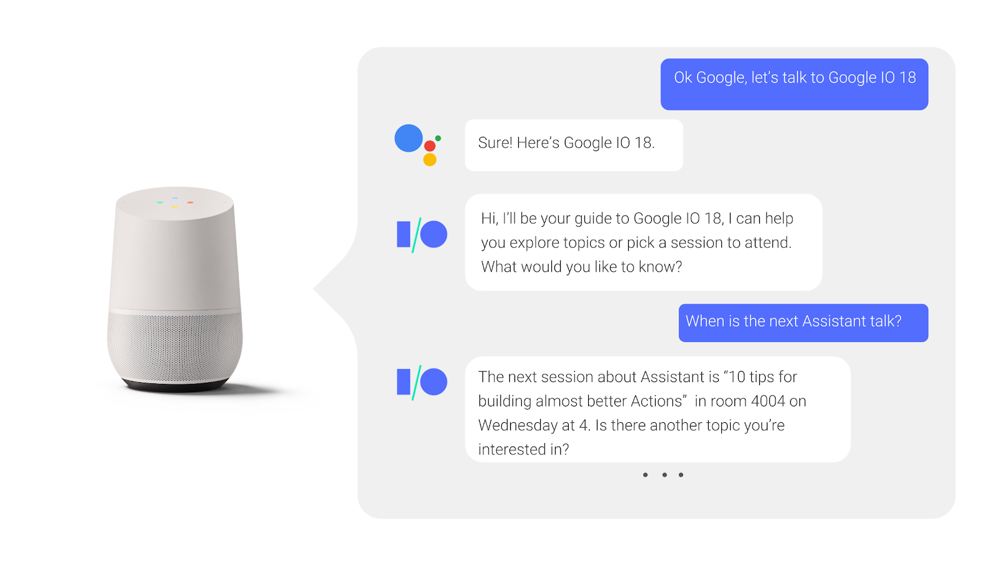
会話中に何が起こっているのかを見てみましょう。
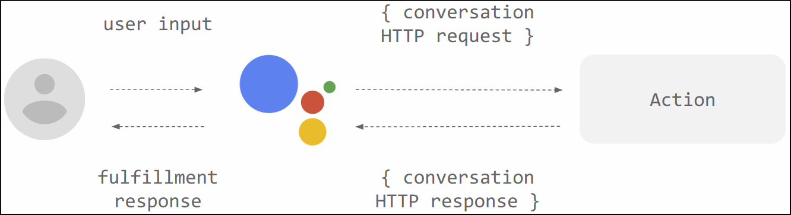
- あなたのアクションは、ユーザーが電話、スマートホームデバイス、または時計で話していたとしても、完全にクラウドで実行されます。
- すべてのアクションは特定のインテントをサポートし、インテントを処理するために、対応するフルフィルメントがあります。
- ユーザーの端末からユーザーの発言がGoogleアシスタントに送信され、HTTP POSTリクエストを介して、あなたのフルフィルメントサービスにルーティングされます。
- あなたのフルフィルメントは、関連するレスポンスを考え出して、アシスタントに返信します。アシスタントは最終的にそれをユーザーに返します。
アクションを作成するには、Actions Projectを作成し、アクションごとに2つの内容（インテントとフルフィルメント）を定義します。
コードラボのこのセクションでは、Actions ConsoleでActions projectを設定する方法について説明します。
Googleの権限設定を確認する
このコードラボで作成するアクションをテストするには、必要な権限を有効にする必要があります。
- "Activity Controls" ページに行きます (https://myaccount.google.com/activitycontrols)。
- サインインされていなければ、あなたのGoogleアカウントでサインインします。
- 以下の権限を有効にします。
- Web & App Activity
- Device Information
- Voice & Audio Activity
Actions projectを作成する
Actions projectは、Actions directory のリストに掲載されるメタデータ（名前、説明、カテゴリ）を持つあなたのアクションのコンテナです。
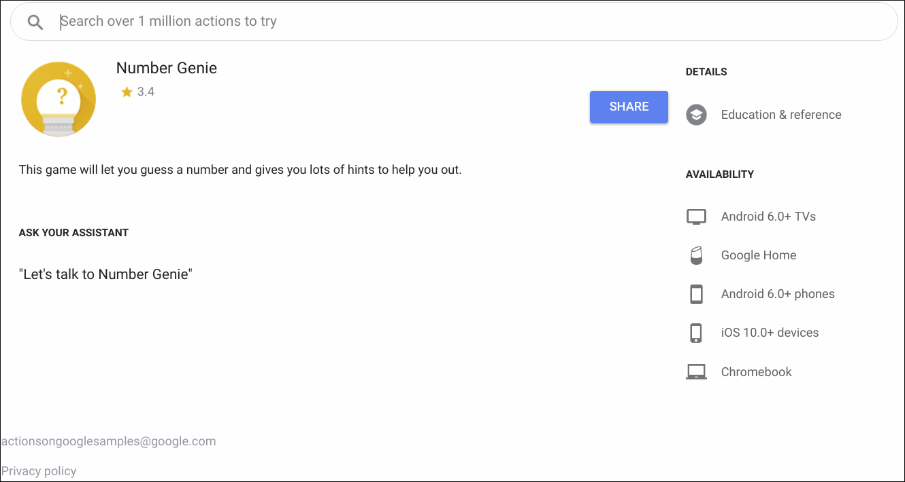
アクションの構築を開始するには、まず以下のようにActions projectを作成する必要があります:
- Actions Console を開きます。
- New project をクリックします。
- "actions-codelab" のように、Project name を入力します。この名前は、内部参照用です。あとで、あなたはこのプロジェクト向けに外部向けの名前をセットすることができます。

- Create Project をクリックします。
- カテゴリを選択するのではなく、More options までスクロールして、Conversational カードをクリックします。

- 選択肢を展開するために Build your Action をクリックして、Add Action(s) を選択します。
- Add your first Action をクリックします。
- Create Action ダイアログにて、Custom intent を選択して、Build をクリックします。新規にタブが開いて、Dialogflow Console が開くでしょう。
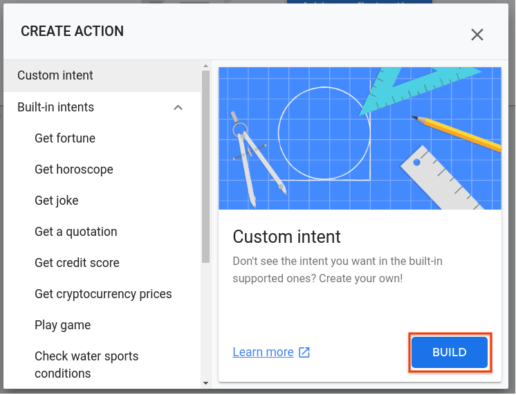
Dialogflowを使ってアクションがどう動作するのか？
アシスタントがユーザーの入力の意味論的意味（話された発話など）をどのように解析するのか疑問に思うかもしれません。これは自然言語理解（NLU）によって行われます。これにより、Googleのソフトウェアで音声認識が可能になります。
あなた自身のアクションについて、Googleは Dialogflow というサービスを提供して、NLUを簡単に処理できるようにしています。Dialogflowは、ユーザーの入力を理解し、入力からキーワードやフレーズを抽出し、応答を返す作業を簡単にします。あなたは、Dialogflowエージェント内で、すべてのこの動作を定義します。
次の図は、Dialogflow（右から2番目の列で表される）がアシスタントからのユーザー入力を処理し、あなたのフルフィルメント（最右列で表される）にリクエストを送信する方法の例を示しています。
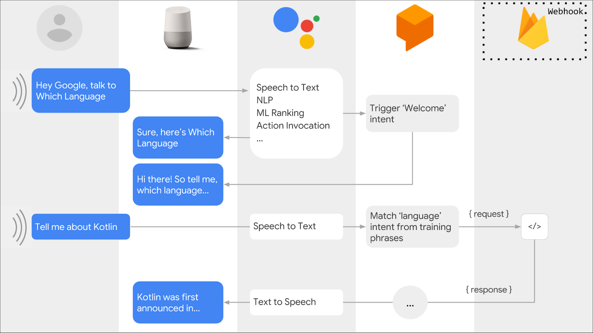
Dialogflowエージェントを作成する
Actions projectを作成したら、Dialogflowエージェントを作成して、あなたのプロジェクトに関連付けを行います:
- 上記の手順を実行した後、上部にActions projectの名前が表示されている Dialogflow Console に既にあなたはいるはずです。あなたのGoogleアカウントを使用するようにDialogflowを承認し、利用規約に同意する必要があります。
- Create をクリックします。
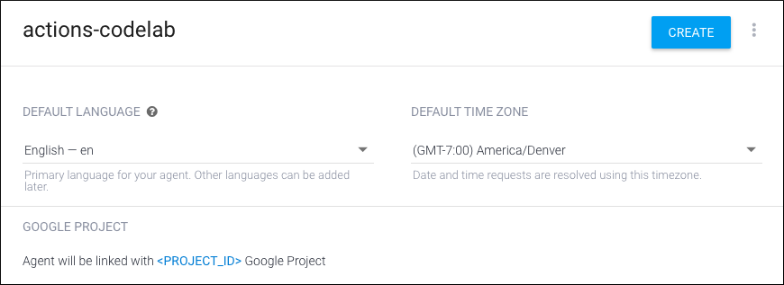
エージェントの作成が成功した場合は、Intents ページに移動します。あなたは、Dialogflowエージェントがユーザーの要求にどのように応答するかをカスタマイズできるようになりました。
ユーザーは、呼び出し（invocation） を通じてアクションを使用して会話を開始します。（明示的な呼び出しの例は、"Hey Google, talk to MovieTime" のようなフレーズです。）その後、アシスタントはユーザーの入力をあなたのアクションの1つに一致させようとします。
ウェルカムインテントを作成する
すべてのActions projectには、ユーザが会話を開始するためのエントリポイントとして機能するウェルカムインテントが必要です。ウェルカムインテントは、ユーザがその名前を発声して明示的にアクションを呼び出すときにトリガーされます。
デフォルトでは、Dialogflowは私たちのためにウェルカムインテントを作成しています。このコードラボでは、ユーザーが "Hey Google, talk to my test app" と発言したときにトリガーされるウェルカムインテントを変更します。
ウェルカムインテントを修正するには、以下を行います:
- Dialogflow Console の Intents ページにて、Default Welcome Intent をクリックします。
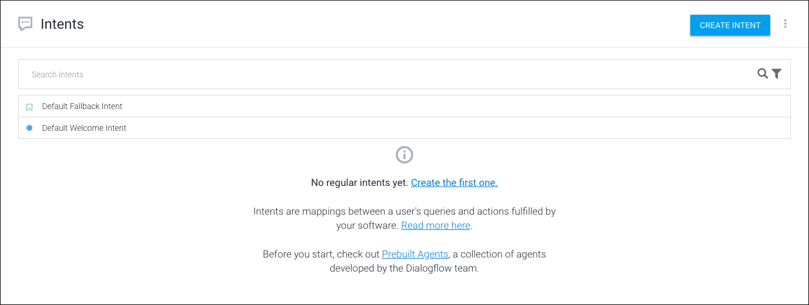
- テキストレスポンスの隣にあるゴミ箱アイコンをそれぞれクリックして、すべてのテキストレスポンスを削除します。
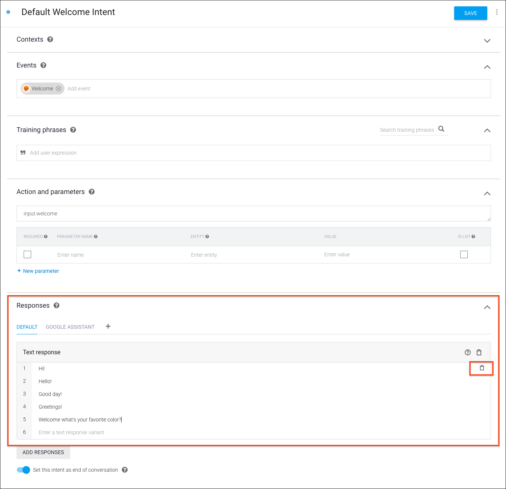
- Responses セクションにて、Enter a text response をクリックして、"Welcome! What is your favorite color?" とタイプします。
- Save をクリックします。"Intent saved" 通知が一時的にポップアップ表示されるはずです。
ウェルカムインテントをテストする
Actions Console では、シミュレータと呼ばれるテストのためのウェブインタフェースが提供されています。このインタフェースでは、ハードウェアデバイスとその設定をシミュレートできます。また、フルフィルメントが受信して送信したリクエストやレスポンスなどのデバッグ情報にアクセスすることもできます。
Actions Console シミュレータであなたのアクションをテストするには、以下を行います:
- 左のナビゲーションの Dialogflow Console にて、Integrations をクリックします。その後、Google Assistant > Integration Settings をクリックします。
- あなたのActions projectを更新するために Test をクリックして、Actions Console シミュレータ内にそれを読み込みます。（もしあなたが "Check auto-preview setting" ダイアログに遭遇した場合は、"Auto-preview changes" オプションを有効にしたまま、Continue をクリックします。）
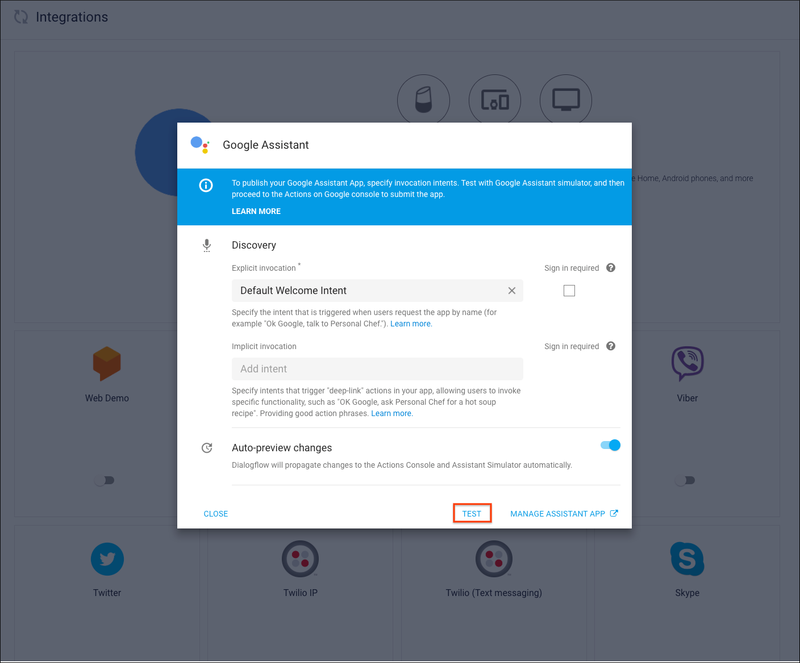
- シミュレータにてあなたのアクションをテストするために、Input フィールド内に "Talk to my test app" とタイプして、Enterキーを叩きます。
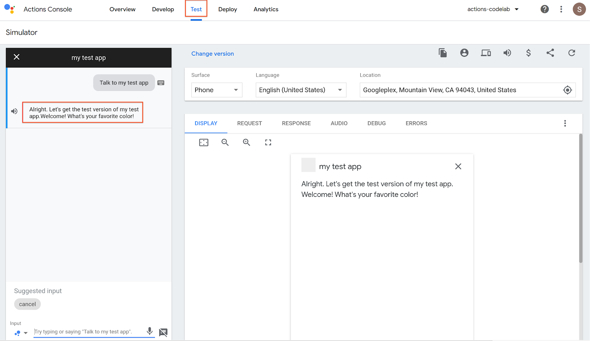
アクションのウェルカムインテントが呼び出された際に、アシスタントが挨拶メッセージで応答し、ユーザーが好みの色を入力するように促されることを確認しましょう。
あなたのアクションをデバッグする
右側のパネルには、あなたのアクションをテストする際に役立つデバッグ情報が表示されています。
- REQUEST および RESPONSE タブにて、アシスタントとDialogflow間のJSONのリクエストおよびレスポンスの本文を見ることができます。
- AUDIO タブでは、アクションの発声レスポンスを見ることができます。レスポンスを更新することで、音声合成された時の音がどうなるかを聞いて更新することができます。
- DEBUG および ERRORS タブでは、あなたのアクションの応答についての問題をトラブルシュートするための助けとなる追加の情報が提供されます。
このコードラボの次のセクションでは、動的な会話型レスポンスをどのように作るかについて見ていきます。
今、ユーザーは会話を始めることができるようになりました。このまま進んでいきましょう。
このセクションでは、Dialogflowの重要な機能であるSlot-fillingの設定の基本について学び、自然な交互の会話を通じてユーザーからの一連の値を収集できるようにします。この機能は、アクションがユーザーのインテントを満たすために特定のパラメータ値のセットを必要とする場合に便利です。
実行中にSlot-fillingを確認するには（しゃれではありません！）、色のレスポンスを表示するための新しいインテントを作成します。ユーザーが返事を発言するかタイプすると、Dialogflowはユーザの入力を解析して、あなたのフルフィルメントに必要な情報（つまり、色）を抽出して、フルフィルメントに送信します。あなたのフルフィルメントは、ユーザーに返信するために幸運な数字を自動生成します。
レスポンスを実装するには、Dialogflow ConsoleにDialogflow intentとDialogflow webhookという2つのコンポーネントを追加する必要があります。
エージェントでDialogflowインテントを定義して、Dialogflowでユーザー要求を処理する方法を制御します。
ウェルカムインテントでは、ユーザーに好みの色を尋ねました。このコードラボでは、この情報を受け取るためのインテントを作ります。これを行うためには、ユーザーからの私たちが必要とする情報を解析するために、インテントの2つの特定のセクション、つまりトレーニングフレーズとパラメータを使用します。
Dialogflow intentを作成する
Dialogflow intentを作成するために、以下を行います:
- Dialogflow Console 内で、もしGoogle Assistant integration setting ページが表示されていたら、それを閉じます。左のナビゲーションにて、Intents をクリックし、その後 Create Intent をクリックします。
- 上にあるインテント名フィールドで、あなたの新しいインテントの名前として "favorite color" とタイプします。Save をクリックします。
- Training phrases にて、以下のフレーズをタイプしてキーボードのEnterを叩くことを繰り返して、ユーザの表現を追加していきます。
- "purple is my favorite"
- "black is my favorite color"
- "I love yellow"
- "Pink"
- "my favorite color is green"
- Action and parameters にて、プロンプトテキストを作成して、ユーザーに好みの色を尋ねます。Parameter Name フィールドに "color" の行が表示されるはずです。トレーニングフレーズ内でエンティティとして認識された単語やフレーズは、自動的に注釈が付けられ、そのパラメータエントリは Dialogflow によって自動的に作成されます。その行にて、以下を行います:
- Required ボックスにチェックを入れます。
- Define prompt... をクリックします。
- プロンプトとして、"What's your favorite color?" を入力します。
- Close をクリックします。
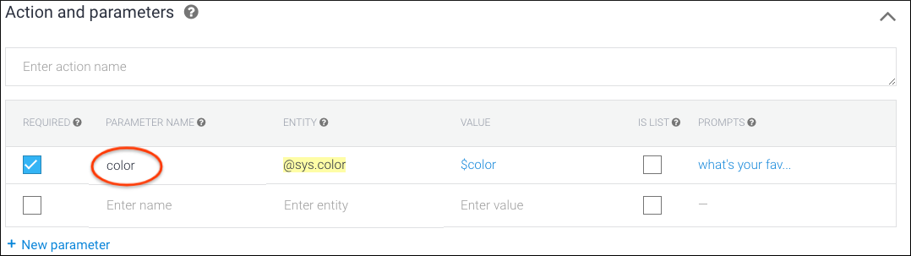
- （左のナビゲーションではなく）このページの Fulfillment セクションにて、Enable Fulfillment をクリックします。下向きの矢印をクリックして、このセクションを展開する必要があるでしょう。
- Enable webhook call for this intent を有効にします。
- Save をクリックします。
これらのステップを完了すると、Dialogflowはこのインテントをトリガーするユーザの発言から認識するパラメータを自動的に抽出します。この場合、color パラメータです。この情報が取得されると、Dialogflowはそれをあなたのフルフィルメントで利用できるようにします。
このコードラボの次のセクションでは、パラメータ値を処理してインテントを扱うDialogflow Webhookを作成する方法について説明します。
このセクションでは、会話的な応答を構築するロジックを含むDialogflow webhookを実装する手順について説明します。また、Actions Console シミュレータを使用して、リアルタイムであなたのアクションを試すこともできます。
Dialogflow webhookには、ユーザーに送信する応答メッセージを動的に作成するためのロジックが含まれています。
あなたのWebhookを構築する
Webhookを構築してデプロイするために、Dialogflow Console の インラインエディタ を使います。あなたのアクションにwebhookを構築するために、以下を行います:
- 左のナビゲーションから、Fulfillment をクリックします。
- Inline Editor のトグルを有効にします。
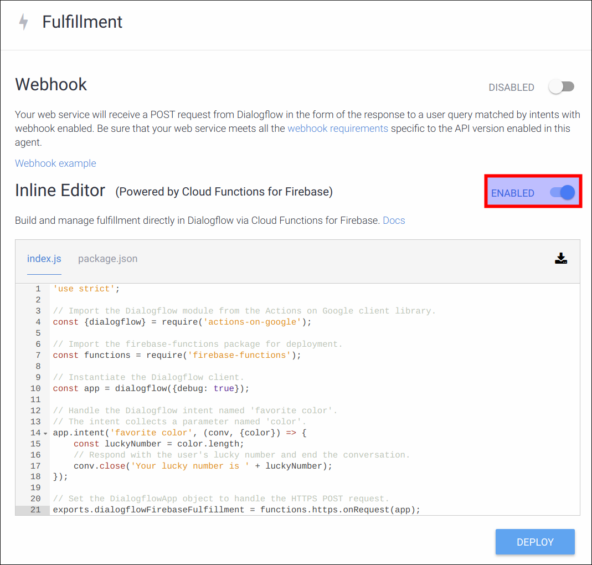
- 以下のコードで、index.js の内容を置き換えます。
index.js
'use strict';
// Import the Dialogflow module from the Actions on Google client library.
const {dialogflow} = require('actions-on-google');
// Import the firebase-functions package for deployment.
const functions = require('firebase-functions');
// Instantiate the Dialogflow client.
const app = dialogflow({debug: true});
// Handle the Dialogflow intent named 'favorite color'.
// The intent collects a parameter named 'color'.
app.intent('favorite color', (conv, {color}) => {
const luckyNumber = color.length;
// Respond with the user's lucky number and end the conversation.
conv.close('Your lucky number is ' + luckyNumber);
});
// Set the DialogflowApp object to handle the HTTPS POST request.
exports.dialogflowFirebaseFulfillment = functions.https.onRequest(app);- Deploy をクリックします。DialogflowがあなたのWebhookコードを準備してデプロイするために、このページで数分待つ必要があるでしょう。コードが正常にデプロイされると、Deploy ボタンの隣にある "Last deployed" タイムスタンプが更新されるのがわかります。
コードを理解する
Webhookのためのこのコードは、JavaScriptで実装されています。Dialogflowのインラインエディタを使うと、あなたのWebhookコードはCloud Functions for Firebaseを使ってクラウド内のマネージド環境にデプロイされます。
このWebhookコードは、Actions on Google Node.js クライアントライブラリを使って、アシスタントがWebhookに送信するHTTPリクエストに応答しています。そのライブラリにて、あなたは Dialogflow API のラッパーとして振る舞う DialogflowApp オブジェクトを作成することができます。
この場合、DialogflowApp オブジェクト型の app 変数が作成されます。app.intent() 関数は、"favorite color" インテントを処理するコールバックを宣言するために使用されます。
コールバックは、2つの重要な引数を受け取ります:
Dialogflow Conversationオブジェクト。これは、ダイアログの状態をクライアントライブラリで抽象化したものであり、現在アクティブなDialogflowコンテキスト、ユーザのデバイスのサーフェスで利用可能な機能など、Webhookへの着信要求の値を表すプロパティを含みます。- Dialogflow
Parametersオブジェクト。これは、関連するインテントで収集されたパラメータ値のJavaScript Object表現です。 （前のセクションで、Dialogflow がsys.colorエンティティに対応する値を抽出するようにパラメータ名 "color" を定義したことを覚えていますか？クライアントライブラリによって、同じパラメータ名がその値を表すために使われます。）
コールバックは、色の単語からその長さを決定することで、ユーザのラッキーナンバーを生成します（たとえば、6文字の単語 "orange" は、好きな色の 6 を返します）。
次に、Conversation オブジェクトパラメータの close メソッドを使用して、ユーザーに応答し、会話を終了します。レスポンスは単純な文字列です（例: "Your lucky number is 6"）。

上記の図は、Webhook 実装の21行目の変数 color が、Dialogflow consoleで前に定義したパラメータ名をどのように使用するかを示しています。たとえば、ユーザが "My favorite color is green" と言った場合、21行目の color 変数は "green" の値になります。
あなたのアクションをテストする
あなたのアクションをテストするために、以下を行います:
- Actions Console を開いて、このコードラボの Actions project を選択します。
- 上部の Test タブをクリックします。出力ウィンドウの上にある X ボタンをクリックします。これにより、シミュレータで以前に開始した可能性のある会話が終了します。
- Input フィールド内で "Talk to my test app" とタイプして、Enter キーを押します。
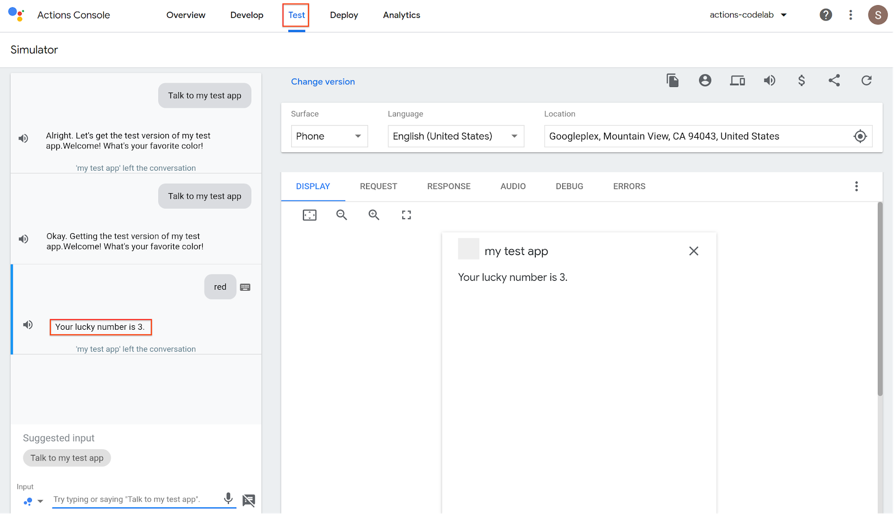
シミュレータは、ウェルカムインテントをコールすることにより、明示的な呼び出しを行います。会話の途中で色を指定することで、"favorite color" カスタムインテントをトリガーすることができます。たとえば、次のフレーズでテストしてみてください。
- Red"
- "I love green."
- "My favorite is pink."
おめでとうございます！
あなたは今、Actions on Googleを使った会話型のユーザインタフェースの構築の基礎を知ることができました。
What we've covered
- Actions Consoleを使ったActions projectのセットアップ方法。
- ユーザがあなたのアクションを使って会話を始めることができるようにするためのウェルカムインテントの作成方法。
- DialogflowインテントとカスタムWebhookを使った会話型の応答の作成方法。
- Actions Consoleシミュレータを使ったアクションのリアルタイムなテスト方法。
次は何ですか？
次のコードラボでは、Actions projectをさらに改良させます。また、Webhookの開発、追加のアクションの追加、そしてコンテキストの状態管理の実装についても学びます。
Actions on Googleについて学ぶために、以下のリソースについても参考にすることができます:
- actions.google.com: Actions on Googleの公式ドキュメントサイトです。
- Actions on Google GitHub repo: サンプルコードとライブラリがあります。
- Dialogflow.com: Dialogflowの公式ドキュメントサイトです。
- r/GoogleAssistantDev: Google アシスタントを使って仕事をしている開発者のための公式 Reddit コミュニティです。
Feedback survey
次に進む前に、私たちにこのフォームからフィードバックをいただければと思います。